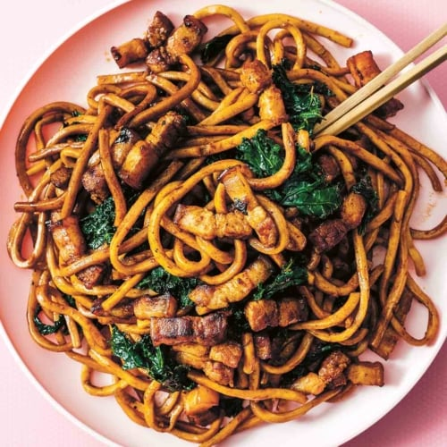

fried noodles recipes

ingredients
- 450 g Noodles cooked
- 3 tbsp Soy Sauce
- 2.5 tbsp Dark Soy Sauce
- 2 tbsp Sugar
- 2 tbsp Sesame Oil
- 4 tbsp Water or Vegetable Stock
- 6 cloves Garlic sliced
- 3 Green Onion cut into 2-inch pieces
- 1-3 Red Chili chopped
- 1.5 cups Bean Sprouts
steps
- In a bowl, mix soy sauce, dark soy sauce, sesame oil, water, and sugar till combined.
- Cook noodle as per instruction, drain and set aside.
- In a pan, drizzle in oil and turn the heat up to medium-high. Once the pan is hot, add garlic, the white part of green onion, and chopped red chili. Saute together for 2-3 minutes
- Add in the noodles and pour in the sauce; mix so all the noodles are coated.
- Turn the heat to high, add in bean sprouts, saute on high heat for 2-3 minutes.
- Add in the rest of the green onion, saute on high heat for 1-2 minutes.